Featured Coach
Ying Chen
Olympic Badminton Player, Coach, Promoting Sport in America
By Isabella Sun
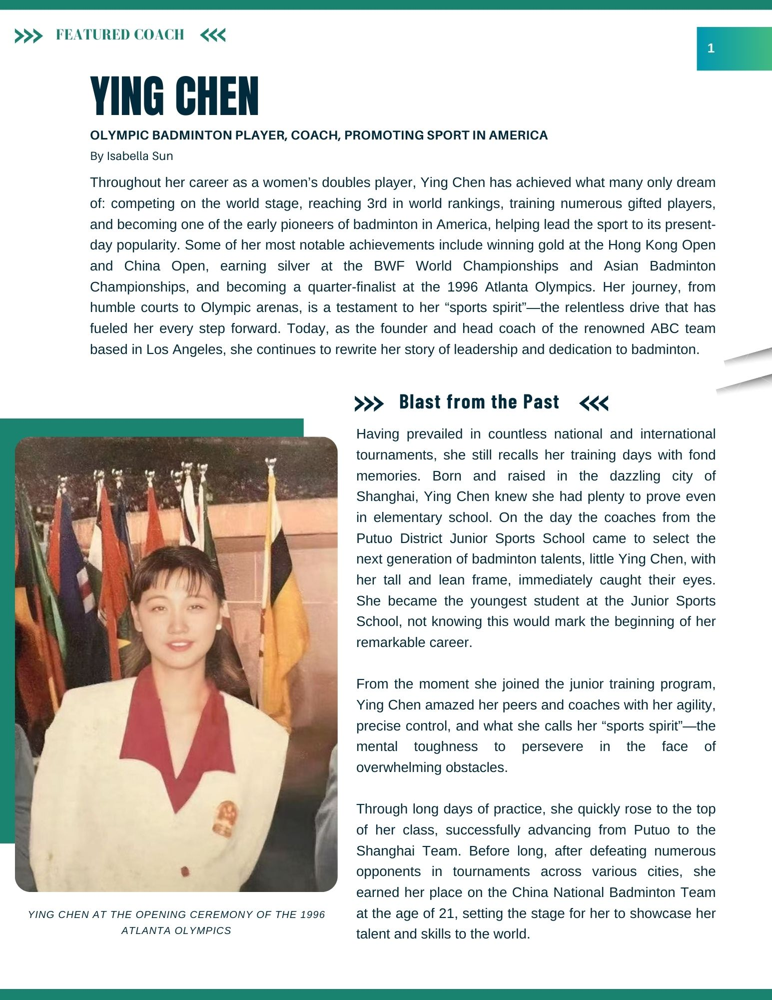
Throughout her career as a women's doubles player, Ying Chen has achieved what many only dream of: competing on the world stage, reaching 3rd in world rankings, training numerous gifted players, and becoming one of the early pioneers of badminton in America, helping lead the sport to its present-day popularity. Some of her most notable achievements include winning gold at the Hong Kong Open and China Open, earning silver at the BWF World Championships and Asian Badminton Championships, and becoming a quarter-finalist at the 1996 Atlanta Olympics. Her journey, from humble courts to Olympic arenas, is a testament to her "sports spirit" — the relentless drive that has fueled her every step forward. Today, as the founder and head coach of the renowned ABC team based in Los Angeles, she continues to rewrite her story of leadership and dedication to badminton.
Blast from the Past
Having prevailed in countless national and international tournaments, she still recalls her training days with fond memories. Born and raised in the dazzling city of Shanghai, Ying Chen knew she had plenty to prove even in elementary school. On the day the coaches from the Putuo District Junior Sports School came to select the next generation of badminton talents, little Ying Chen, with her tall and lean frame, immediately caught their eyes. She became the youngest student at the Junior Sports School, not knowing this would mark the beginning of her remarkable career.
From the moment she joined the junior training program, Ying Chen amazed her peers and coaches with her agility, precise control, and what she calls her "sports spirit" — the mental toughness to persevere in the face of overwhelming obstacles.
Through long days of practice, she quickly rose to the top of her class, successfully advancing from Putuo to the Shanghai Team. Before long, after defeating numerous opponents in tournaments across various cities, she earned her place on the China National Badminton Team at the age of 21, setting the stage for her to showcase her talent and skills to the world.
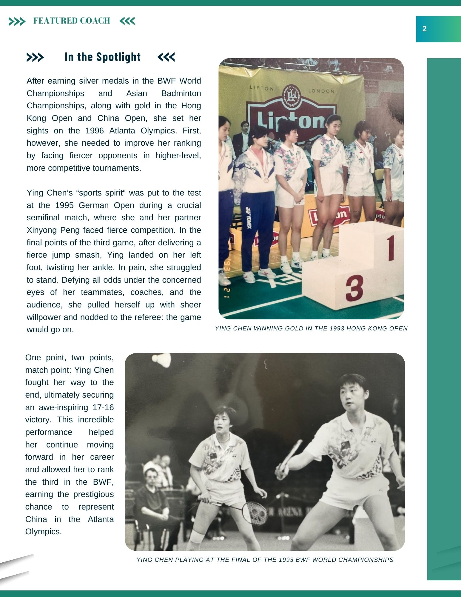
In the Spotlight
After earning silver medals in the BWF World Championships and Asian Badminton Championships, along with gold in the Hong Kong Open and China Open, she set her sights on the 1996 Atlanta Olympics. First, however, she needed to improve her ranking by facing fiercer opponents in higher-level, more competitive tournaments.
Ying Chen's "sports spirit" was put to the test at the 1995 German Open during a crucial semifinal match, where she and her partner Xinyong Peng faced fierce competition. In the final points of the third game, after delivering a fierce jump smash, Ying landed on her left foot, twisting her ankle. In pain, she struggled to stand. Defying all odds under the concerned eyes of her teammates, coaches, and the audience, she pulled herself up with sheer willpower and nodded to the referee: the game would go on.
One point, two points, match point: Ying Chen fought her way to the end, ultimately securing an awe-inspiring 17-16 victory. This incredible performance helped her continue moving forward in her career and allowed her to rank the third in the BWF, earning the prestigious chance to represent China in the Atlanta Olympics.
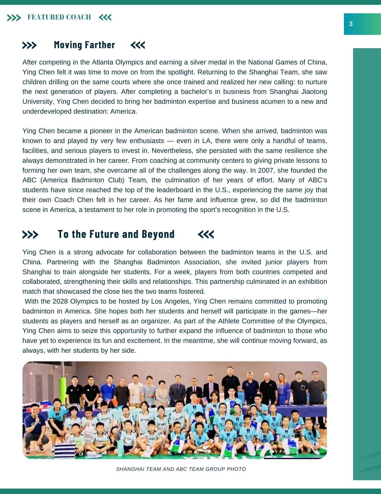
Moving Farther
After competing in the Atlanta Olympics and earning a silver medal in the National Games of China, Ying Chen felt it was time to move on from the spotlight. Returning to the Shanghai Team, she saw children drilling on the same courts she once trained and realized her new calling: to nurture the next generation of players. After completing a bachelor's in business from Shanghai Jiaotong University, Ying Chen decided to bring her badminton expertise and business acumen to a new and underdeveloped destination: America.
Ying Chen became a pioneer in the American badminton scene. When she arrived, badminton was known to and played by very few enthusiasts — even in LA, there were only a handful of teams, facilities, and serious players to invest in. Nevertheless, she persisted with the same resilience she always demonstrated in her career. From coaching at community centers to giving private lessons to forming her own team, she overcame all of the challenges along the way. In 2007, she founded the ABC (America Badminton Club) Team, the culmination of her years of effort. Many of ABC's students have since reached the top of the leaderboard in the U.S., experiencing the same joy that their own Coach Chen felt in her career. As her fame and influence grew, so did the badminton scene in America, a testament to her role in promoting the sport's recognition in the U.S.
To the Future and Beyond
Ying Chen is a strong advocate for collaboration between the badminton teams in the U.S. and China. Partnering with the Shanghai Badminton Association, she invited junior players from Shanghai to train alongside her students. For a week, players from both countries competed and collaborated, strengthening their skills and relationships. This partnership culminated in an exhibition match that showcased the close ties the two teams fostered.
With the 2028 Olympics to be hosted by Los Angeles, Ying Chen remains committed to promoting badminton in America. She hopes both her students and herself will participate in the games — her students as players and herself as an organizer. As part of the Athlete Committee of the Olympics, Ying Chen aims to seize this opportunity to further expand the influence of badminton to those who have yet to experience its fun and excitement. In the meantime, she will continue moving forward, as always, with her students by her side.
Wisdom from a Champion
3 Lessons I've Learned from Winning 7 Badminton National Championships
By Justin Ma
I've been playing badminton for 20 years, including several years as a professional player. In my career, I've had the honor of winning 7 US Junior National Championships, competing in the Pan American Games, and representing my country in both the World University Championships and the prestigious World Championships.
Through these experiences, I've gained invaluable insights and lessons. Here are the 3 most impactful and hard lessons I've learned:
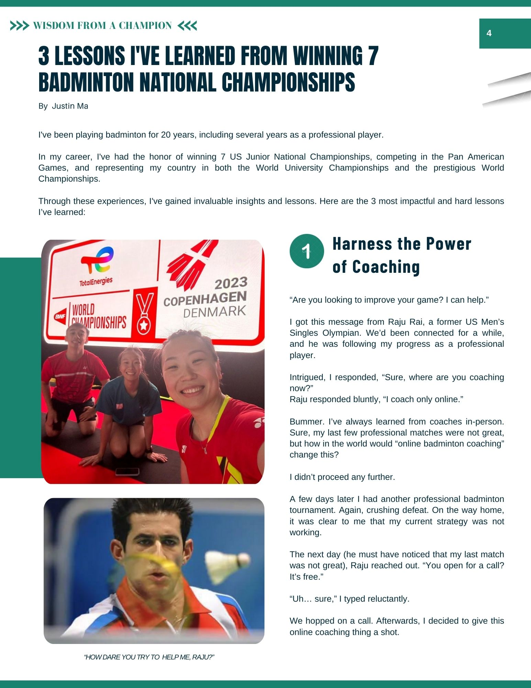
1. Harness the Power of Coaching
"Are you looking to improve your game? I can help."
I got this message from Raju Rai, a former US Men's Singles Olympian. We'd been connected for a while, and he was following my progress as a professional player.
Intrigued, I responded, "Sure, where are you coaching now?" Raju responded bluntly, "I coach only online."
Bummer. I've always learned from coaches in-person. Sure, my last few professional matches were not great, but how in the world would "online badminton coaching" change this? I didn't proceed any further.
A few days later I had another professional badminton tournament. Again, crushing defeat. On the way home, it was clear to me that my current strategy was not working.
The next day (he must have noticed that my last match was not great), Raju reached out: "You open for a call? It's free."
"Uh… sure," I typed reluctantly. We hopped on a call. Afterwards, I decided to give this online coaching thing a shot.
In the next 6 months, I reached a worldwide ranking of 126 — a personal best. I also competed in the world championships for the first time in my life.
It was at this moment that I realized the following: If you only learn from coaches that live nearby, you miss out on 99.999% of the worldwide population that can help you. Don't be as stubborn as I was. Learn from the worldwide talent pools of coaches, and not just from the coaches you have close by. It works.
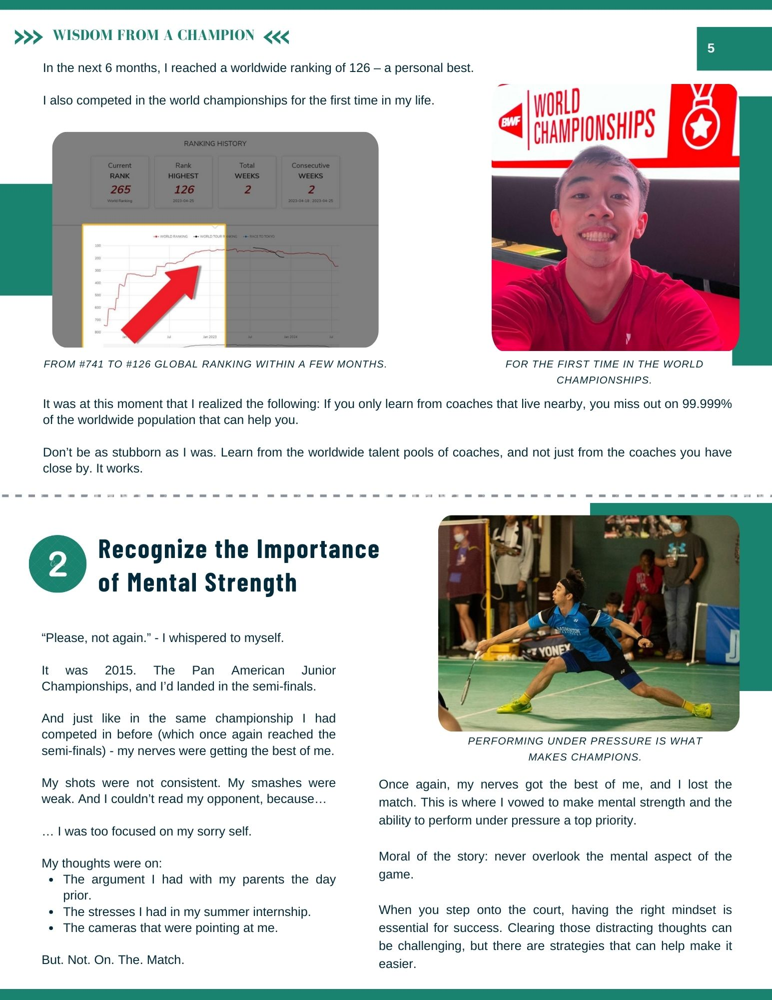
2. Recognize the Importance of Mental Strength
"Please, not again." - I whispered to myself.
It was 2015. The Pan American Junior Championships, and I'd landed in the semi-finals.
And just like in the same championship I had competed in before (which once again reached the semi-finals), my nerves were getting the best of me.
My shots were not consistent. My smashes were weak. And I couldn't read my opponent, because… I was too focused on my sorry self.
My thoughts were on: the argument I had with my parents the day prior, the stresses I had in my summer internship, the cameras that were pointing at me. But. Not. On. The. Match.
Once again, my nerves got the best of me, and I lost the match. This is where I vowed to make mental strength and the ability to perform under pressure a top priority.
Moral of the story: never overlook the mental aspect of the game. When you step onto the court, having the right mindset is essential for success. Clearing those distracting thoughts can be challenging, but there are strategies that can help make it easier.
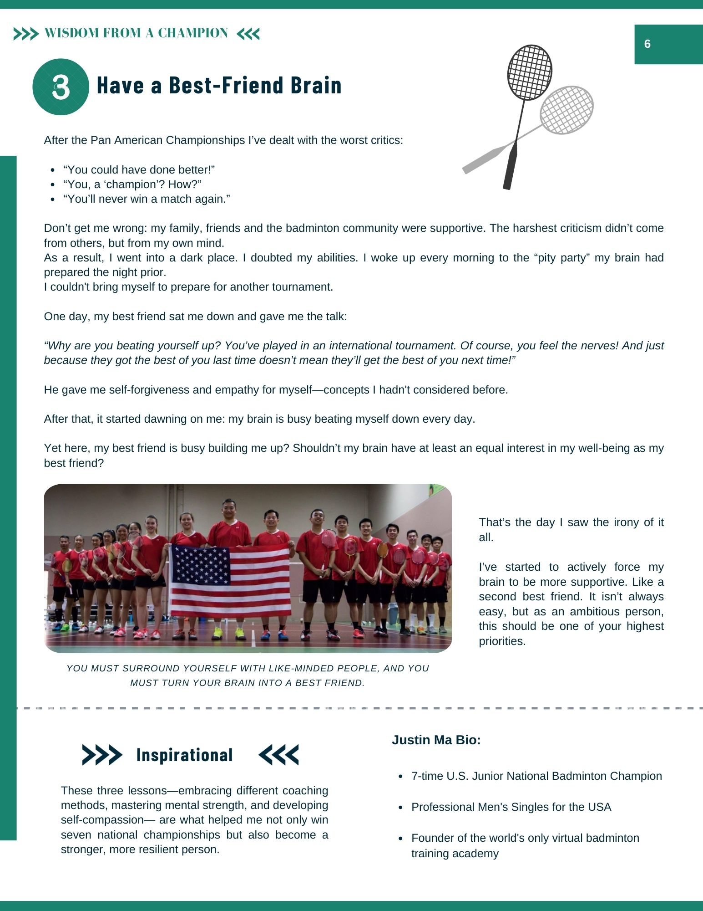
3. Have a Best-Friend Brain
After the Pan American Championships I've dealt with the worst critics:
- "You could have done better!"
- "You, a 'champion'? How?"
- "You'll never win a match again."
Don't get me wrong: my family, friends and the badminton community were supportive. The harshest criticism didn't come from others, but from my own mind. As a result, I went into a dark place. I doubted my abilities. I woke up every morning to the "pity party" my brain had prepared the night prior. I couldn't bring myself to prepare for another tournament.
One day, my best friend sat me down and gave me the talk:
"Why are you beating yourself up? You've played in an international tournament. Of course, you feel the nerves! And just because they got the best of you last time doesn't mean they'll get the best of you next time!"
He gave me self-forgiveness and empathy for myself — concepts I hadn't considered before. After that, it started dawning on me: my brain is busy beating myself down every day. Yet here, my best friend is busy building me up? Shouldn't my brain have at least an equal interest in my well-being as my best friend?
That's the day I saw the irony of it all. I've started to actively force my brain to be more supportive. Like a second best friend. It isn't always easy, but as an ambitious person, this should be one of your highest priorities.
You must surround yourself with like-minded people, and you must turn your brain into a best friend.
❯❯❯ Inspirational ❮❮❮
These three lessons — embracing different coaching methods, mastering mental strength, and developing self-compassion — are what helped me not only win seven national championships but also become a stronger, more resilient person.
Justin Ma Bio
- 7-time U.S. Junior National Badminton Champion
- Professional Men's Singles for the USA
- Founder of the world's only virtual badminton training academy
A Journey of Growth
Soccer Struggles to Badminton Triumphs
By Emma Wei
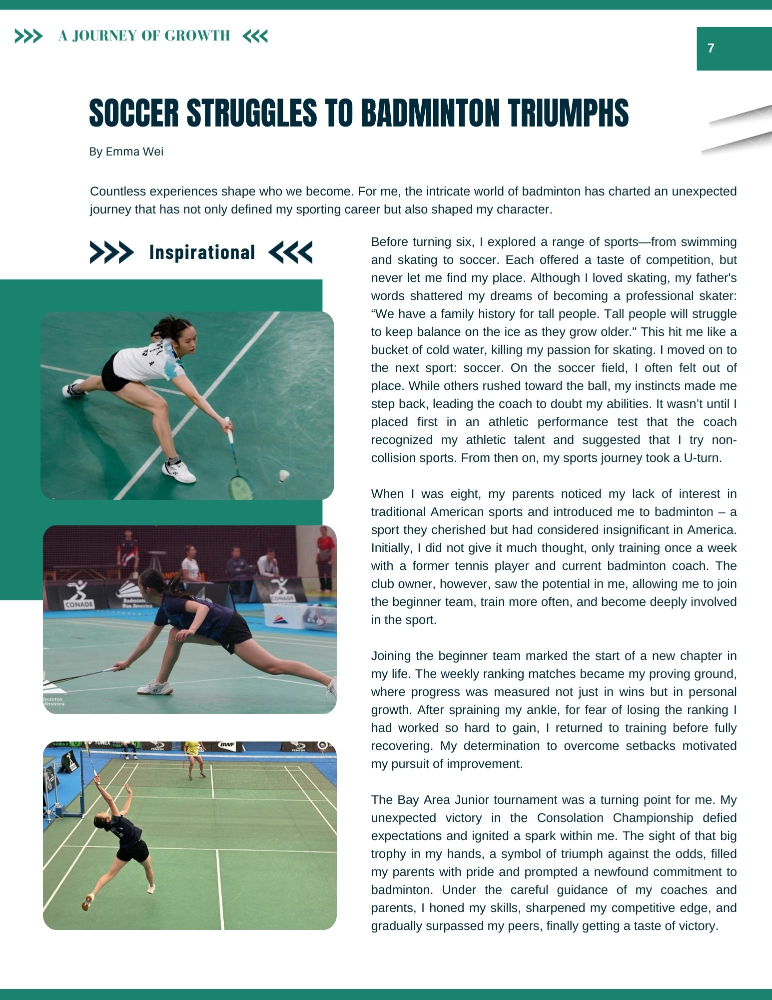
Countless experiences shape who we become. For me, the intricate world of badminton has charted an unexpected journey that has not only defined my sporting career but also shaped my character.
Before turning six, I explored a range of sports — from swimming and skating to soccer. Each offered a taste of competition, but never let me find my place. Although I loved skating, my father's words shattered my dreams of becoming a professional skater: "We have a family history for tall people. Tall people will struggle to keep balance on the ice as they grow older." This hit me like a bucket of cold water, killing my passion for skating. I moved on to the next sport: soccer. On the soccer field, I often felt out of place. While others rushed toward the ball, my instincts made me step back, leading the coach to doubt my abilities. It wasn't until I placed first in an athletic performance test that the coach recognized my athletic talent and suggested that I try non-collision sports. From then on, my sports journey took a U-turn.
When I was eight, my parents noticed my lack of interest in traditional American sports and introduced me to badminton — a sport they cherished but had considered insignificant in America. Initially, I did not give it much thought, only training once a week with a former tennis player and current badminton coach. The club owner, however, saw the potential in me, allowing me to join the beginner team, train more often, and become deeply involved in the sport.
Joining the beginner team marked the start of a new chapter in my life. The weekly ranking matches became my proving ground, where progress was measured not just in wins but in personal growth. After spraining my ankle, for fear of losing the ranking I had worked so hard to gain, I returned to training before fully recovering. My determination to overcome setbacks motivated my pursuit of improvement.
The Bay Area Junior tournament was a turning point for me. My unexpected victory in the Consolation Championship defied expectations and ignited a spark within me. The sight of that big trophy in my hands, a symbol of triumph against the odds, filled my parents with pride and prompted a newfound commitment to badminton. Under the careful guidance of my coaches and parents, I honed my skills, sharpened my competitive edge, and gradually surpassed my peers, finally getting a taste of victory.
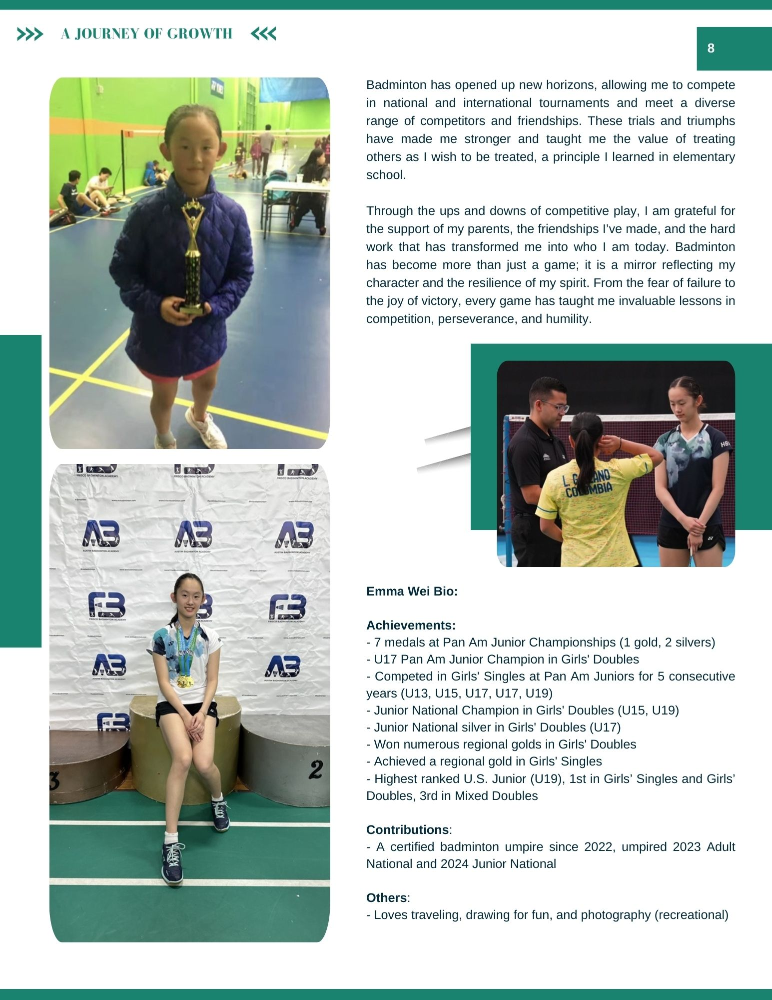
Badminton has opened up new horizons, allowing me to compete in national and international tournaments and meet a diverse range of competitors and friendships. These trials and triumphs have made me stronger and taught me the value of treating others as I wish to be treated, a principle I learned in elementary school.
Through the ups and downs of competitive play, I am grateful for the support of my parents, the friendships I've made, and the hard work that has transformed me into who I am today. Badminton has become more than just a game; it is a mirror reflecting my character and the resilience of my spirit. From the fear of failure to the joy of victory, every game has taught me invaluable lessons in competition, perseverance, and humility.
Emma Wei Bio
Achievements:
- 7 medals at Pan Am Junior Championships (1 gold, 2 silvers)
- U17 Pan Am Junior Champion in Girls' Doubles
- Competed in Girls' Singles at Pan Am Juniors for 5 consecutive years (U13, U15, U17, U17, U19)
- Junior National Champion in Girls' Doubles (U15, U19)
- Junior National silver in Girls' Doubles (U17)
- Won numerous regional golds in Girls' Doubles
- Highest ranked U.S. Junior (U19), 1st in Girls' Singles and Girls' Doubles, 3rd in Mixed Doubles
Contributions:
- A certified badminton umpire since 2022, umpired 2023 Adult National and 2024 Junior National
From Passion to Podium
A Journey of Passion and Perseverance
By Joline Siu
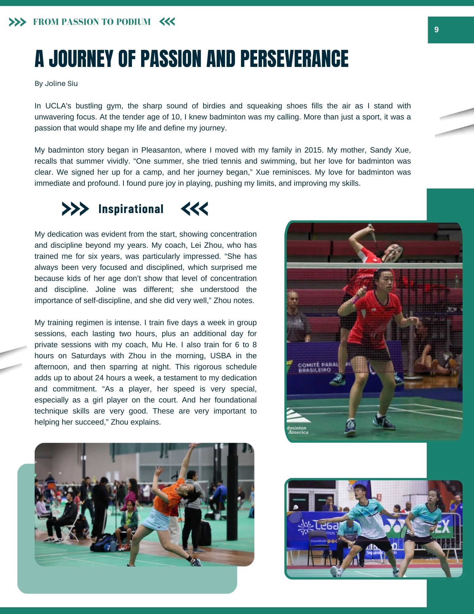
In UCLA's bustling gym, the sharp sound of birdies and squeaking shoes fills the air as I stand with unwavering focus. At the tender age of 10, I knew badminton was my calling. More than just a sport, it was a passion that would shape my life and define my journey.
My badminton story began in Pleasanton, where I moved with my family in 2015. My mother, Sandy Xue, recalls that summer vividly. "One summer, she tried tennis and swimming, but her love for badminton was clear. We signed her up for a camp, and her journey began," Xue reminisces. My love for badminton was immediate and profound. I found pure joy in playing, pushing my limits, and improving my skills.
❯❯❯ Inspirational ❮❮❮
My dedication was evident from the start, showing concentration and discipline beyond my years. My coach, Lei Zhou, who has trained me for six years, was particularly impressed. "She has always been very focused and disciplined, which surprised me because kids of her age don't show that level of concentration and discipline. Joline was different: she understood the importance of self-discipline, and she did very well," Zhou notes.
My training regimen is intense. I train five days a week in group sessions, each lasting two hours, plus an additional day for private sessions with my coach, Ms. He. I also train for 6 to 8 hours on Saturdays with Zhou in the morning, USBA in the afternoon, and then sparring at night. This rigorous schedule adds up to about 24 hours a week, a testament to my dedication and commitment. "As a player, her speed is very special, especially as a girl player on the court. And her foundational technique skills are very good. These are very important to helping her succeed," Zhou explains.
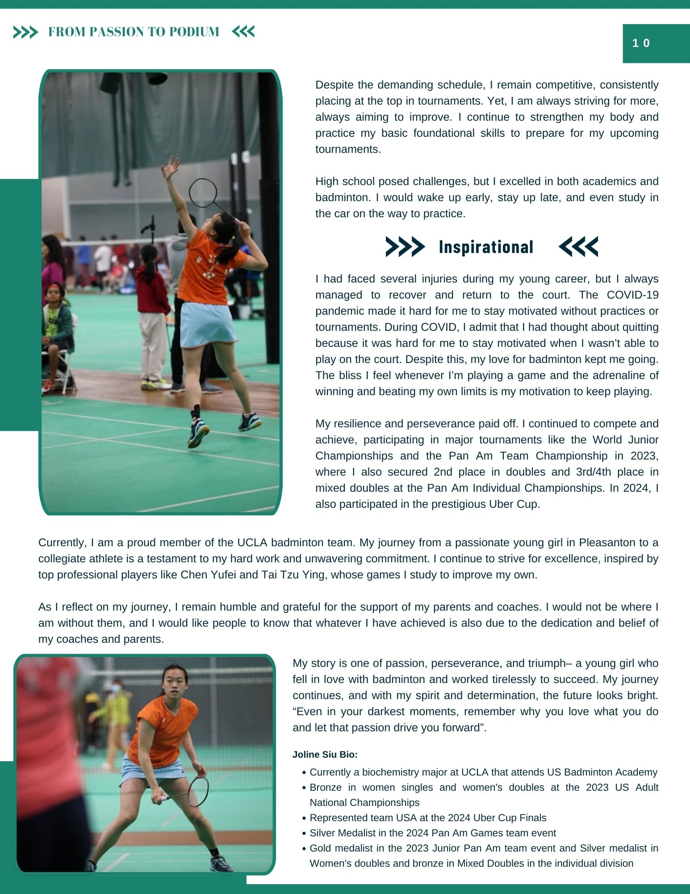
Despite the demanding schedule, I remain competitive, consistently placing at the top in tournaments. Yet, I am always striving for more, always aiming to improve. I continue to strengthen my body and practice my basic foundational skills to prepare for my upcoming tournaments.
High school posed challenges, but I excelled in both academics and badminton. I would wake up early, stay up late, and even study in the car on the way to practice.
I have faced several injuries during my young career, but I always managed to recover and return to the court. The COVID-19 pandemic made it hard for me to stay motivated without practices or tournaments. During COVID, I admit that I had thought about quitting because it was hard for me to stay motivated when I wasn't able to play on the court. Despite this, my love for badminton kept me going. The bliss I feel whenever I'm playing a game and the adrenaline of winning and beating my own limits is my motivation to keep playing.
My resilience and perseverance paid off. I continued to compete and achieve, participating in major tournaments like the World Junior Championships and the Pan Am Team Championship in 2023, where I also secured 2nd place in doubles and 3rd/4th place in mixed doubles at the Pan Am Individual Championships. In 2024, I also participated in the prestigious Uber Cup.
Currently, I am a proud member of the UCLA badminton team. My journey from a passionate young girl in Pleasanton to a collegiate athlete is a testament to my hard work and unwavering commitment. I continue to strive for excellence, inspired by top professional players like Chen Yufei and Tai Tzu Ying, whose games I study to improve my own.
Joline Siu Bio
- Currently a biochemistry major at UCLA that attends US Badminton Academy
- Bronze in women singles and women's doubles at the 2023 US Adult National Championship
- Represented Team USA at the 2024 Uber Cup Finals
- Silver Medalist in the 2024 Pan Am Games team event
- Gold medalist in the 2023 Junior Pan Am team event and Silver medalist in Women's doubles and bronze in Mixed Doubles in the individual division
Chasing Greatness
The Unyielding Journey of Alice Wang
By Andy Zhang
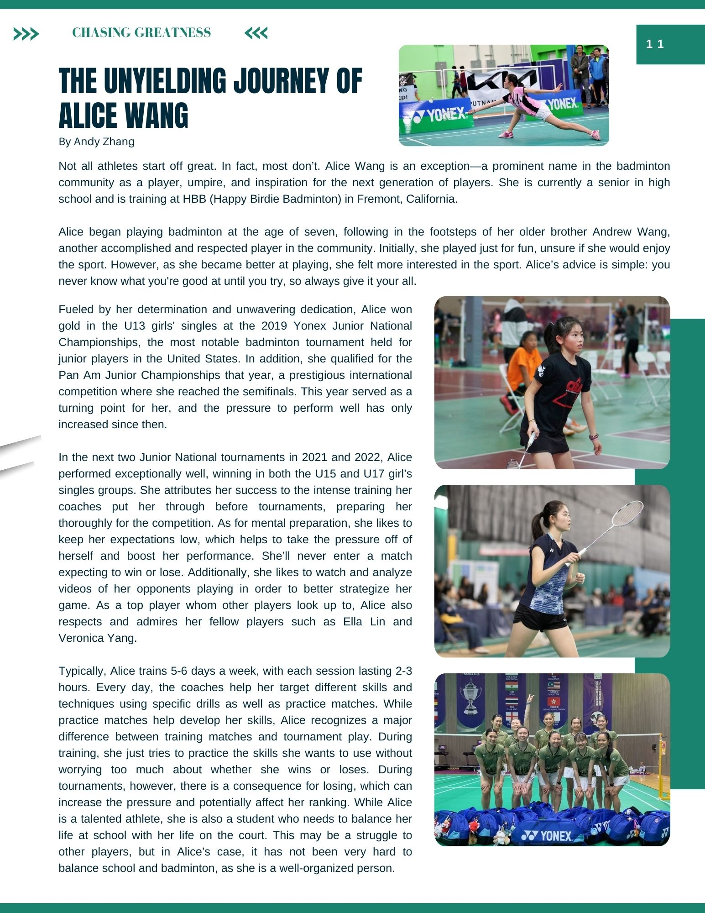
Not all athletes start off great. In fact, most don't. Alice Wang is an exception — a prominent name in the badminton community as a player, umpire, and inspiration for the next generation of players. She is currently a senior in high school and is training at HBB (Happy Birdie Badminton) in Fremont, California.
Alice began playing badminton at the age of seven, following in the footsteps of her older brother Andrew Wang, another accomplished and respected player in the community. Initially, she played just for fun, unsure if she would enjoy the sport. However, as she became better at playing, she felt more interested in the sport. Alice's advice is simple: you never know what you're good at until you try, so always give it your all.
Fueled by her determination and unwavering dedication, Alice won gold in the U13 girls' singles at the 2019 Yonex Junior National Championships, the most notable badminton tournament held for junior players in the United States. In addition, she qualified for the Pan Am Junior Championships that year, a prestigious international competition where she reached the semifinals. This year served as a turning point for her, and the pressure to perform well has only increased since then.
In the next two Junior National tournaments in 2021 and 2022, Alice performed exceptionally well, winning in both the U15 and U17 girl's singles groups. She attributes her success to the intense training her coaches put her through before tournaments, preparing her thoroughly for the competition. As for mental preparation, she likes to keep her expectations low, which helps to take the pressure off of herself and boost her performance. She'd never enter a match expecting to win or lose. Additionally, she likes to watch and analyze videos of her opponents playing in order to better strategize her game. As a top player when other players look up to, Alice also respects and admires her fellow players such as Ella Lin and Veronica Yang.
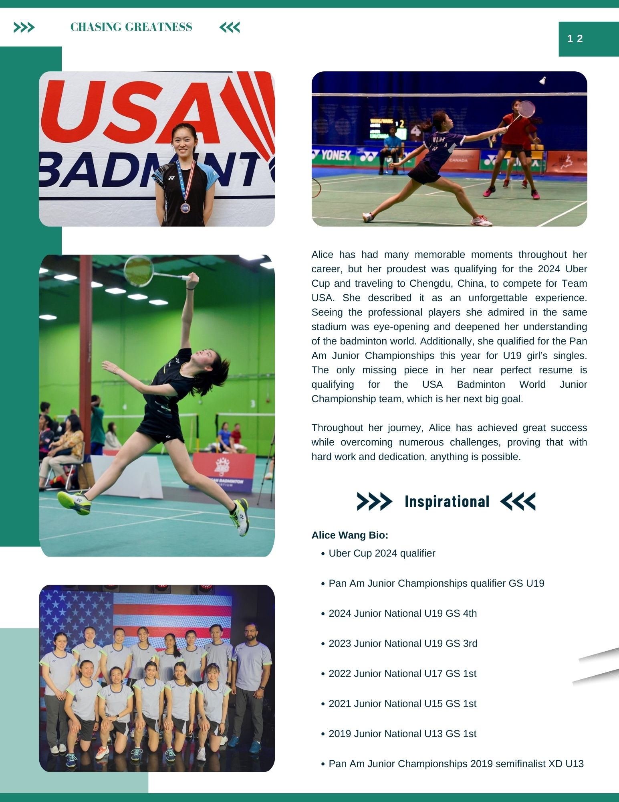
Alice has had many memorable moments throughout her career, but her proudest was qualifying for the 2024 Uber Cup and traveling to Chengdu, China, to compete for Team USA. She described it as an unforgettable experience. Seeing the professional players she admired in the same stadium was eye-opening and deepened her understanding of the badminton world. Additionally, she qualified for the Pan Am Junior Championships this year for U19 girl's singles. The only missing piece in her near perfect resume is qualifying for the USA Badminton World Junior Championships team, which is her next big goal.
Throughout her journey, Alice has achieved great success while overcoming numerous challenges, proving that with hard work and dedication, anything is possible.
Alice Wang Bio
- Uber Cup 2024 qualifier
- Pan Am Junior Championships qualifier GS U19
- 2024 Junior National U19 GS 4th
- 2023 Junior National U19 GS 3rd
- 2022 Junior National U17 GS 1st
- 2021 Junior National U15 GS 1st
- 2019 Junior National U13 GS 1st
- Pan Am Junior Championships 2019 semifinalist XD U13
Forging My Own Path
A Goal
By Caden Wang
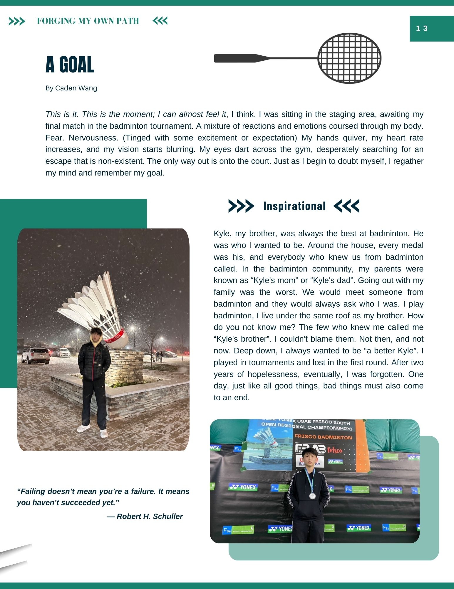
This is it. This is the moment. I can almost feel it. I think. I was sitting in the staging area, awaiting my final match in the badminton tournament. A mixture of reactions and emotions coursed through my body. Fear. Nervousness. (Tinged with some excitement or expectation) My hands quiver, my heart rate increases, and my vision starts blurring. My eyes dart across the gym, desperately searching for an escape that is non-existent. The only way out is onto the court. Just as I begin to doubt myself, I regather my mind and remember my goal.
Kyle, my brother, was always the best at badminton. He was who I wanted to be. Around the house, every medal was his, and everybody who knew us from badminton called. In the badminton community, my parents were known as "Kyle's mom" or "Kyle's dad". Going out with my family was the worst. We would meet someone from badminton and they would always ask who I was. I play badminton, I live under the same roof as my brother. How do you not know me? The few who knew me called me "Kyle's brother". I couldn't blame them. Not then, and not now. Deep down, I always wanted to be "a better Kyle". I played in tournaments and lost in the first round. After two years of hopelessness, eventually, I was forgotten. One day, just like all good things, bad things must also come to an end.
"Failing doesn't mean you're a failure. It means you haven't succeeded yet." — Robert H. Schuller
It was a small tournament in which I lost the first round to a girl named Marrie. She was three years younger than me. Three. I didn't think much of it until I went to training the next day. Walking past the door, hearing the small crowd, I smelled the familiar scent of rubber courts. Pop! Pop! Sounds of badminton racquets hitting the shuttlecocks. I stopped after nearing a group of people.
People were murmuring, staring at me, some snickering behind my back. It felt like all eyes were on me. I kept walking on, confused. Feeling a light tap on my back, I whipped around and saw my best friend holding his phone under my nose. Every pair of eyes that looked at me that night left a wound in me that I knew would never heal.
There it was, lines of green text messages sent in a group chat. The first message said, "He sucks at badminton." My eyes widened in disbelief as I saw the name. Marrie. Fighting the urge to snatch the phone and hurl it to the ground, I remained calm and continued reading. "I beat him easily, light work." I swallowed, feeling my mouth go dry as a ringing filled up my ear. Already feeling tears well up in my eyes, I laughed and walked away, pretending it didn't hurt. I couldn't stand it, ever again.
Soon enough, most of my friends found out. I laughed it off at the moment, laughed when asked about it, laughed when the topic was brought up again. Laughter became my only way of coping. Then something began to form that had rarely occurred. A goal. My goal. A goal to chart my badminton journey as a man. Not a boy chasing his brother's legacy, not a shadow in the dark, but a man who found enough light to cast a shadow of his own. A legacy about me.
❯❯❯ Inspirational ❮❮❮
I feel my body loosening up, less tense, and feeling a strange weightlessness. "Under Seventeen doubles, Caden Wang!" bellows an umpire. Looking up, I threw my badminton bag over my shoulder, expecting it to be heavy. Yet, it felt strangely light — lighter than ever before, lighter than it ever will be again. Taking one final breath, I walk into the courts with confident steps. This is it. This is the moment. I know it.
"Belief in yourself has to be earned." — Roger Federer
Moments Beyond the Court
Inspiration at the 2024 YONEX US Open
By Yee Ning Yap
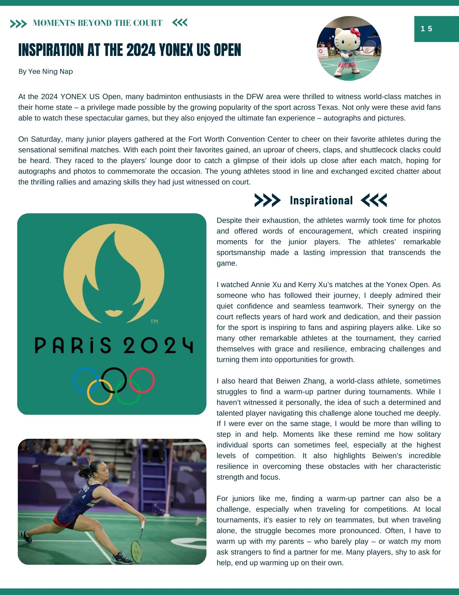
At the 2024 YONEX US Open, many badminton enthusiasts in the DFW area were thrilled to witness world-class matches in their home state — a privilege made possible by the growing popularity of the sport across Texas. Not only were these avid fans able to watch these spectacular games, but they also enjoyed the ultimate fan experience — autographs and pictures.
On Saturday, many junior players gathered at the Fort Worth Convention Center to cheer on their favorite athletes during the sensational semifinal matches. With each point their favorites gained, an uproar of cheers, claps, and shuttlecock clicks could be heard. They raced to the players' lounge door to catch a glimpse of their idols up close after each match, hoping for autographs and photos to commemorate the occasion. The young athletes stood in line and exchanged excited chatter about the thrilling rallies and amazing skills they had just witnessed on court.
Despite their exhaustion, the athletes warmly took time for photos and offered words of encouragement, which created inspiring moments for the junior players. The athletes' remarkable sportsmanship made a lasting impression that transcends the game.
I watched Annie Xu and Kerry Xu's matches at the Yonex Open. As someone who has followed their journey, I deeply admired their quiet confidence and seamless teamwork. Their synergy on the court reflects years of hard work and dedication, and their passion for the sport is inspiring to fans and aspiring players alike. Like so many other remarkable athletes at the tournament, they carried themselves with grace and resilience, embracing challenges and turning them into opportunities for growth.
I also heard that Beiwen Zhang, a world-class athlete, sometimes struggles to find a warm-up partner during tournaments. While I haven't witnessed it personally, the idea of such a determined and talented player navigating this challenge alone touched me deeply. If I were ever on the same stage, I would be more than willing to step in and help. Moments like these remind me how solitary individual sports can sometimes feel, especially at the highest levels of competition. It also highlights Beiwen's incredible resilience in overcoming these obstacles with her characteristic strength and focus.
All the top players at the Yonex Open exemplify the heart of badminton — not just in their skill and achievements but in their determination, sportsmanship, and unique ability to inspire others. Annie Xu, Kerry Xu, Beiwen Zhang, and countless other exceptional athletes shine in different ways, whether through their seamless teamwork, resilience in facing challenges, or their unyielding passion for the sport. Together, their journeys remind us of the values of perseverance, mutual support, and the incredible strength found in the badminton community. Watching each of these players contribute something special encourages us to celebrate not just individual brilliance but also the shared spirit that unites us. I hope their stories inspire greater unity within the badminton world, fostering an environment where all players can come together to thrive and shine.
The 2024 US Open not only showcased exceptional badminton, but also fostered a sense of community and aspiration among its attendees. The event reminded everyone present — especially the young players meeting their idols — of the power sports carry to inspire, showing that with dedication and perseverance, dreams really can become reality.
Enthusiastic Badminton Community
CUAAASC Badminton Club
By Wei Wang & Wei Ding
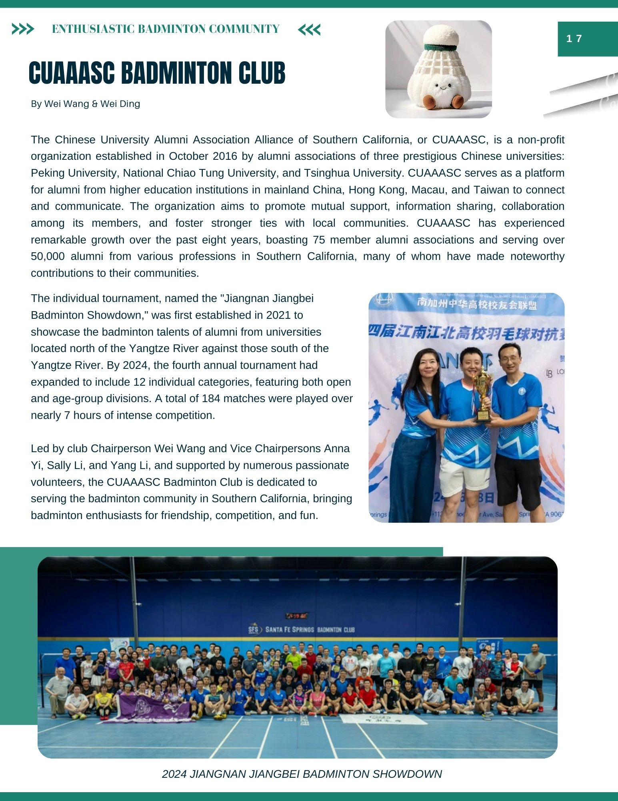
The Chinese University Alumni Association Alliance of Southern California, or CUAAASC, is a non-profit organization established in October 2016 by alumni associations of three prestigious Chinese universities: Peking University, National Chiao Tung University, and Tsinghua University. CUAAASC serves as a platform for alumni from higher education institutions in mainland China, Hong Kong, Macau, and Taiwan to connect and communicate. The organization aims to promote mutual support, information sharing, collaboration among its members, and foster stronger ties with local communities. CUAAASC has experienced remarkable growth over the past eight years, boasting 75 member alumni associations and serving over 50,000 alumni from various professions in Southern California, many of whom have made noteworthy contributions to their communities.
The individual tournament, named the "Jiangnan Jiangbei Badminton Showdown," was first established in 2021 to showcase the badminton talents of alumni from universities located north of the Yangtze River against those south of the Yangtze River. By 2024, the fourth annual tournament had expanded to include 12 individual categories, featuring both open and age-group divisions. A total of 184 matches were played over nearly 7 hours of intense competition.
Led by club Chairperson Wei Wang and Vice Chairpersons Anna Yi, Sally Li, and Yang Li, and supported by numerous passionate volunteers, the CUAAASC Badminton Club is dedicated to serving the badminton community in Southern California, bringing badminton enthusiasts for friendship, competition, and fun.
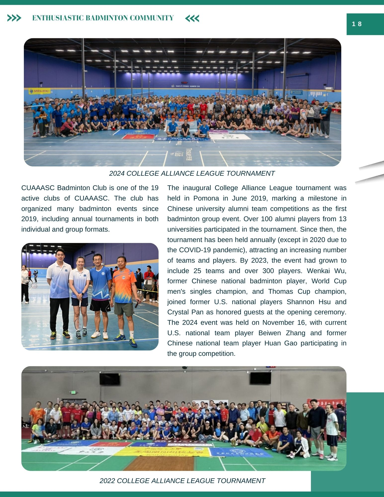
CUAAASC Badminton Club is one of the 19 active clubs of CUAAASC. The club has organized many badminton events since 2019, including annual tournaments in both individual and group formats.
The inaugural College Alliance League tournament was held in Pomona in June 2019, marking a milestone in Chinese university alumni team competitions as the first badminton group event. Over 100 alumni players from 13 universities participated in the tournament. Since then, the tournament has been held annually (except in 2020 due to the COVID-19 pandemic), attracting an increasing number of teams and players. By 2023, the event had grown to include 25 teams and over 300 players. Wenkai Wu, former Chinese national badminton player, World Cup men's singles champion, and Thomas Cup champion, joined former U.S. national players Shannon Hsu and Crystal Pan as honored guests at the opening ceremony. The 2024 event was held on November 16, with current U.S. national team player Beiwen Zhang and former Chinese national team player Huan Gao participating in the group competition.
Legend of Badminton
Wei Zhong
A Badminton Mentor on the International Stage: Sowing Seeds that Bloom Worldwide
By Cheng Ma
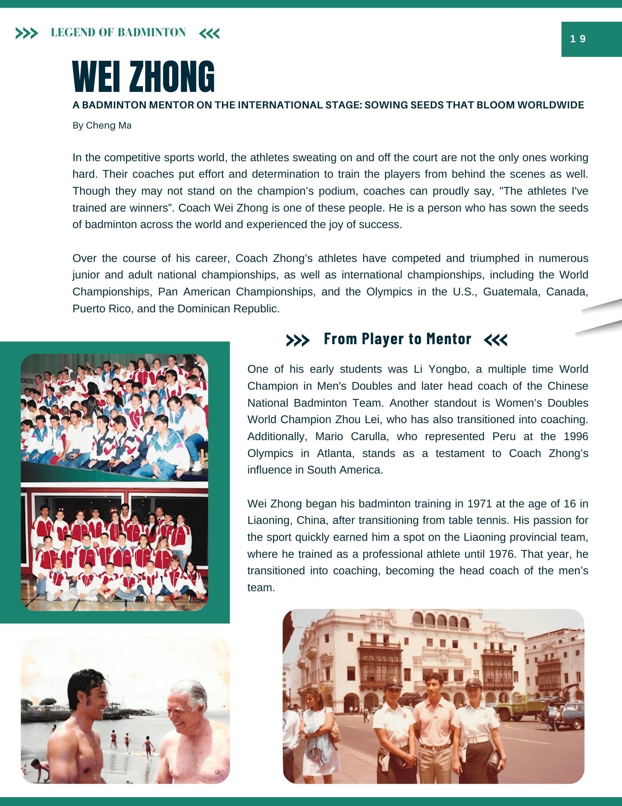
In the competitive sports world, the athletes sweating on and off the court are not the only ones working hard. Their coaches put effort and determination to train the players from behind the scenes as well. Though they may not stand on the champion's podium, coaches can proudly say, "The athletes I've trained are winners." Coach Wei Zhong is one of these people. He is a person who has sown the seeds of badminton across the world and experienced the joy of success.
Over the course of his career, Coach Zhong's athletes have competed and triumphed in numerous junior and adult national championships, as well as international championships, including the World Championships, Pan American Championships, and the Olympics in the U.S., Guatemala, Canada, Puerto Rico, and the Dominican Republic.
From Player to Mentor
One of his early students was Li Yongbo, a multiple time World Champion in Men's Doubles and later head coach of the Chinese National Badminton Team. Another standout is Women's Doubles World Champion Zhou Lei, who has also transitioned into coaching. Additionally, Mario Carulla, who represented Peru at the 1996 Olympics in Atlanta, stands as a testament to Coach Zhong's influence in South America.
Wei Zhong began his badminton training in 1971 at the age of 16 in Liaoning, China, after transitioning from table tennis. His passion for the sport quickly earned him a spot on the Liaoning provincial team, where he trained as a professional athlete until 1976. That year, he transitioned into coaching, becoming the head coach of the men's team.
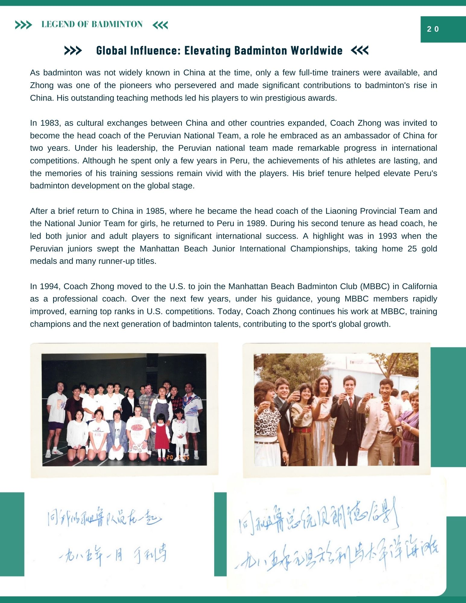
Global Influence: Elevating Badminton Worldwide
As badminton was not widely known in China at the time, only a few full-time trainers were available, and Zhong was one of the pioneers who persevered and made significant contributions to badminton's rise in China. His outstanding coaching methods led his players to win prestigious awards.
In 1983, as cultural exchanges between China and other countries expanded, Coach Zhong was invited to become the head coach of the Peruvian National Team, a role he embraced as an ambassador of China for two years. Under his leadership, the Peruvian national team made remarkable progress in international competitions. Although he spent only a few years in Peru, the achievements of his athletes are lasting, and the memories of his training sessions remain vivid with the players. His brief tenure helped elevate Peru's badminton development on the global stage.
After a brief return to China in 1985, where he became the head coach of the Liaoning Provincial Team and the National Junior Team for girls, he returned to Peru in 1989. During his second tenure as head coach, he led both junior and adult players to significant international success. A highlight was in 1993 when the Peruvian juniors swept the Manhattan Beach Junior International Championships, taking home 25 gold medals and many runner-up titles.
In 1994, Coach Zhong moved to the U.S. to join the Manhattan Beach Badminton Club (MBBC) in California as a professional coach. Over the next few years, under his guidance, young MBBC members rapidly improved, earning top ranks in U.S. competitions. Today, Coach Zhong continues his work at MBBC, training champions and the next generation of badminton talents, contributing to the sport's global growth.
Legendary Badminton Dynasty
The Zhou Family's Badminton Legacy: Building Champions, Shaping the Future
By Brian Chen
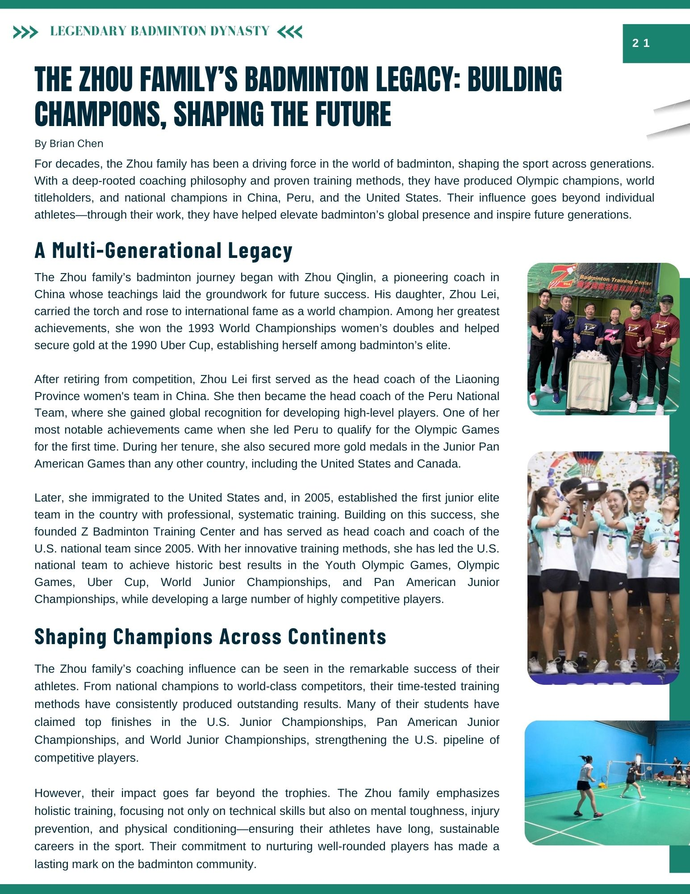
For decades, the Zhou family has been a driving force in the world of badminton, shaping the sport across generations. With a deep-rooted coaching philosophy and proven training methods, they have produced Olympic champions, world titleholders, and national champions in China, Peru, and the United States. Their influence goes beyond individual athletes — through their work, they have helped elevate badminton's global presence and inspire future generations.
A Multi-Generational Legacy
The Zhou family's badminton journey began with Zhou Qinglin, a pioneering coach in China whose teachings laid the groundwork for future success. His daughter, Zhou Lei, carried the torch and rose to international fame as a world champion. Among her greatest achievements, she won the 1993 World Championships women's doubles and helped secure gold at the 1990 Uber Cup, establishing herself among badminton's elite.
After retiring from competition, Zhou Lei first served as the head coach of the Liaoning Province women's team in China. She then became the head coach of the Peru National Team, where she gained global recognition for developing high-level players. One of her most notable achievements came when she led Peru to qualify for the Olympic Games for the first time. During her tenure, she also secured more gold medals in the Junior Pan American Games than any other country, including the United States and Canada.
Later, she immigrated to the United States and, in 2005, established the first junior elite team in the country with professional, systematic training. Building on this success, she founded 2 Badminton Training Center and has served as head coach and coach of the U.S. national team since 2005. With her innovative training methods, she has led the U.S. national team to achieve historic best results in the Youth Olympic Games, Olympic Games, Uber Cup, World Junior Championships, and Pan American Junior Championships, while developing a large number of highly competitive players.
Shaping Champions Across Continents
The Zhou family's coaching influence can be seen in the remarkable success of their athletes. From national champions to world-class competitors, their time-tested training methods have consistently produced outstanding results. Many of their students have claimed top finishes in the U.S. Junior Championships, Pan American Junior Championships, and World Junior Championships, strengthening the U.S. pipeline of competitive players.
However, their impact goes far beyond the trophies. The Zhou family emphasizes holistic training, focusing not only on technical skills but also on mental toughness, injury prevention, and physical conditioning — ensuring their athletes have long, sustainable careers in the sport. Their commitment to nurturing well-rounded players has made a lasting mark on the badminton community.
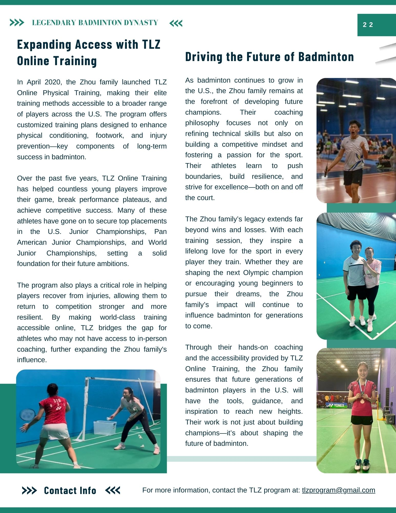
Expanding Access with TLZ Online Training
In April 2020, the Zhou family launched TLZ Online Physical Training, making their elite training methods accessible to a broader range of players across the U.S. The program offers customized training plans designed to enhance physical conditioning, footwork, and injury prevention — key components of long-term success in badminton.
Over the past five years, TLZ Online Training has helped countless young players improve their game, break performance plateaus, and achieve competitive success. Many of these athletes have gone on to secure top placements in the U.S. Junior Championships, Pan American Junior Championships, and World Junior Championships, setting a solid foundation for their future ambitions.
The program also plays a critical role in helping players recover from injuries, allowing them to return to competition stronger and more resilient. By making world-class training accessible online, TLZ bridges the gap for athletes who may not have access to in-person coaching, further expanding the Zhou family's influence.
Driving the Future of Badminton
As badminton continues to grow in the U.S., the Zhou family remains at the forefront of developing future champions. Their coaching philosophy focuses not only on refining technical skills but also on building a competitive mindset and fostering a passion for the sport. Their athletes learn to push boundaries, build resilience, and strive for excellence — both on and off the court.
The Zhou family's legacy extends far beyond wins and losses. With each training session, they inspire a lifelong love for the sport in every player they train. Whether they are shaping the next Olympic champion or encouraging young beginners to pursue their dreams, the Zhou family's impact will continue to influence badminton for generations to come.
Through their hands-on coaching and the accessibility provided by TLZ Online Training, the Zhou family ensures that future generations of badminton players in the U.S. will have the tools, guidance, and inspiration to reach new heights. Their work is not just about building champions — it's about shaping the future of badminton.